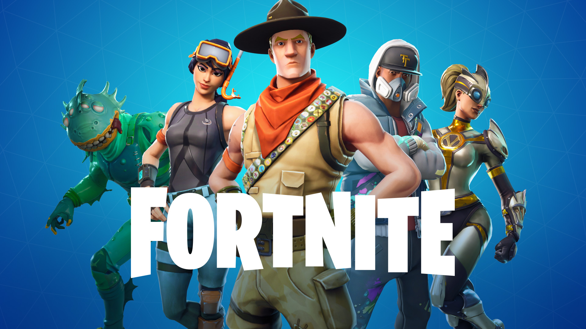

Vamos falar de tudo que dominamos series, filmes, jogos e muito mais.
Mas não basta apenas ser fã de cultura pop, ver os filmes da Marvel e dizer que lia Batman quando criança. O mundo nerd é bem maior do que isso e ser um nerd envolve comportamentos, gostos e manias que já fazem parte do seu jeito de ser — são coisas que, na grande maioria das vezes, acabam passando despercebidos por nós. Afinal, é algo tão natural que nem nos damos conta de que fazemos essas coisas.
Primeiro o domínio do conhecimento
O conhecimento sempre foi a matéria-prima de qualquer nerd. Seja com ciência, matemática ou mesmo cultura pop, o importante é dominar aquele universo e saber tudo o que for possível sobre ele. Você simplesmente não consegue pegar um gibi do Homem-Aranha e ler aquela história isolada. É preciso saber todos os arcos anteriores, as sagas e os grandes eventos que podem (ou não) influenciar na edição que você tem em mãos. Se há uma história maior por trás, você tem que conhecer. Esse é o conceito básico por traz do nerd e, por isso, você se sente absurdamente incomodado de ler ou ver coisas pela metade. Se vai sair um novo filme ou jogo que dá sequência a uma série antiga, você tem que ver e jogar tudo antes de partir para o novo. Dessa forma, maratonas de atualização são mais do que comuns dentro do seu dia a dia. Não por acaso, você conhece os atores pelos nomes de seus personagens e não pelos seus próprios nomes.
Vamos falar das queridinhas, as séries
The Big Bang Theory
The Big Bang Theory se tornou tão popular, que virou a atração mais vista na TV norte-americana. A série, lançada em 2007, mostra o dia a dia de um grupo de amigos com enorme capacidade intelectual, mas com poucas habilidades para o mundo real. A sitcom é extremamente rica em piadas nerds e conta com 279 episódios, mais que suficiente para horas e horas de maratona. claro pode ser considerada por muitos nerds como a melhor nesse aspecto.
Por isso será nossa primeira dica de série, tem muitas temporadas você pode aproveitar pra se apronfundar nesse mundo
Silicon Valley
Criada por Mike Judge, John Altschuler, Dave Krinsky e Alec Berg em 2014, a série conta a história de um grupo de programadores que trabalham no Vale do Silício e enfrentam a rotina das gigantes da tecnologia. A sitcom traz os desafios da indústria e dos profissionais da área, misturando situações cômicas e trágicas na vida dos personagens.
Otima pra quem quer se tornar um programador e ver como é o dia a dia de quem trabalha em empresas de porte mundial.
Star Trek
Não poderia ficar fora da lista Star Trek, claro. A série original, criada por Gene Roddenberry em 1966, mostra as aventuras do capitão James T. Kirk e de sua tripulação na nave USS Enterprise. Entre os personagens do programa estão Spock, McCoy, Uhura, Scott, Sulu e Chekov, exploradores da galáxia e defensores da Federação Unida dos Planetas. E, além da série original, há outras séries que mostram outras equipes, com outras missões, além de diversos filmes que fazem parte da franquia.
Não poderiamos deixar de fora o clássico de todos os tempos ....
Agora os Games aquilo que todo Nerd que se prese ama .
Super Mario Bros 3 (1988)
apesar de você nerd ainda ser um jovem mancebo, falar um pouco dos clássicos e sempre importante
Mario Bros. 3 é considerado por muitos o melhor jogo da série Mario da época 2D. O jogo inovou na jogabilidade e trouxe diversas características inesquecíveis como a roupa dos hammer brothers, roupa de sapo, roupa de guaxinim, sapato do Goomba e a maravilhosa Asa-P, que permitia atravessar uma fase inteira voando. O jogo é dividido em 8 mundos diferentes, cada um com elementos próprios e extremamente divertidos. Pela primeira vez era possível interagir com itens não apenas nas fases, mas no mapa dos mundos. Sem dúvida é o título mais dinâmico entre os Marios da época.
League of Legends

League of Legends é um jogo eletrônico do gênero multiplayer online battle arena, desenvolvido e publicado pela Riot Games para Microsoft Windows e Mac OS X. É um jogo gratuito para jogar e inspirado no modo Defense of the Ancients de Warcraft III: The Frozen Throne.
o amado por nerds por varios anos, desde de gerações passadas até hoje muitos nunca deixaram de amar esse jogo de RPG
Em League of Legends, os jogadores assumem o papel de "invocadores", controlando campeões com habilidades únicas e que lutam com seu time contra outros invocadores ou campeões controlados pelo computador. No modo mais popular do jogo, o objetivo de cada time é destruir o nexus da equipe adversária, uma construção localizada na base e protegida por outras estruturas. Cada partida de League of Legends é distinta, pois os campeões sempre começam fracos e progridem através da acumulação de ouro e da experiência ao longo do jogo.
eague of Legends foi bem recebido desde o seu lançamento e sua popularidade cresceu ao decorrer dos anos. Em julho de 2012, foi o jogo para computador mais jogado na América do Norte e Europa em termos de número de horas jogadas.[6] Até janeiro de 2014, mais de 67 milhões de pessoas jogavam League of Legends por mês, 27 milhões por dia e mais de 7,5 milhões durante o horário de pico.
Fortnite
Não poderiamos deixar de falar de um Fonôneno dos Royales
Fortnite é um jogo eletrônico online criado em 2017, desenvolvido pela Epic Games, e lançado como diferentes pacotes de software com diferentes modos de jogo que compartilham a mesma jogabilidade e motor gráfico de jogo. Os modos de jogo incluem Fortnite: Save the World, um jogo cooperativo de sobrevivência para até quatro jogadores para lutar contra cascas de zumbis e defender objetos com fortificações que eles possam construir, e Fortnite Battle Royale, um jogo free-to-play do gênero battle royale onde até 100 jogadores lutam em espaços cada vez menores para serem a última pessoa ou time vencedor. Ambos os modos de jogo foram lançados em 2017 como títulos de acesso antecipado; Save the World está disponível apenas para Microsoft Windows, macOS, PlayStation 4 e Xbox One, enquanto Battle Royale foi lançado para essas mesmas plataformas, incluindo o Nintendo Switch e dispositivos iOS e Android. Embora ambos os jogos tenham sido bem sucedidos para a Epic Games, o Fortnite Battle Royale se tornou um sucesso retumbante, atraindo mais de 125 milhões de jogadores em menos de um ano e ganhando centenas de milhões de dólares por mês, e desde então tem sido um fenômeno cultural.